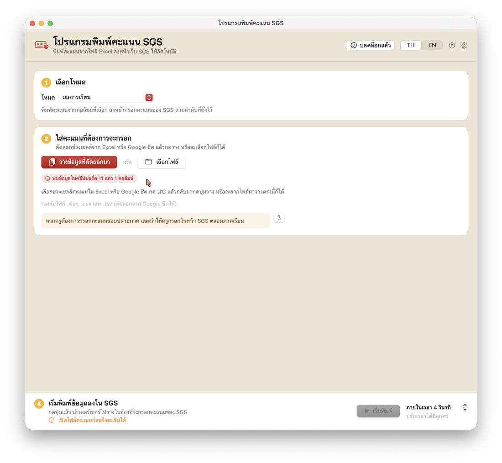
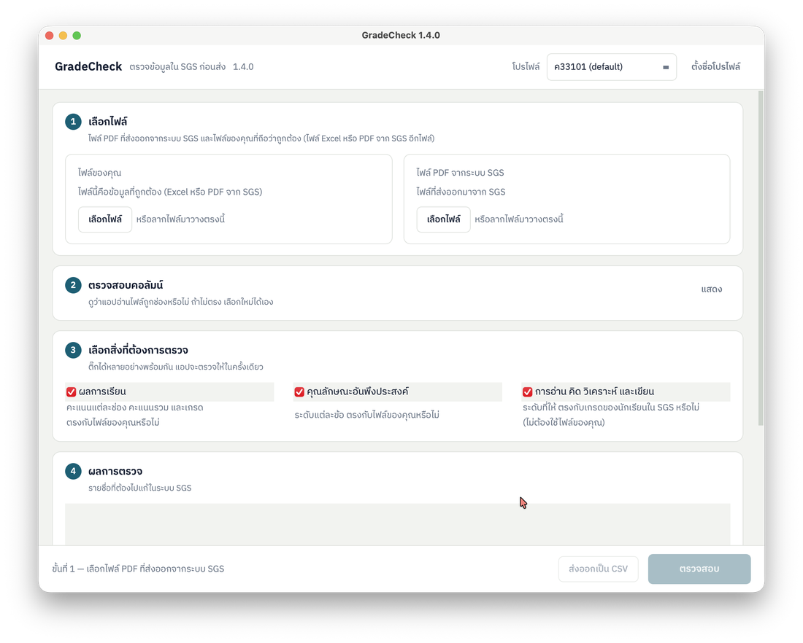

กรอกคะแนนลง SGS ให้อัตโนมัติ แล้วตรวจซ้ำว่าไม่มีช่องไหนผิด
สองโปรแกรมสำหรับคุณครู ใช้ได้ทั้ง Windows และ Mac เริ่มใช้ฟรี ไม่ต้องสมัครสมาชิก

SGS Auto-Typer
พิมพ์คะแนนจาก Excel หรือ Google ชีตลงหน้ากรอกคะแนนของ SGS ให้ทีละช่อง ครบ 4 โหมด

GradeCheck
เทียบรายงาน PDF จาก SGS กับไฟล์ Excel ของคุณครูทีละช่อง แล้วบอกรายชื่อที่ต้องไปแก้ก่อนส่ง
คะแนนนักเรียนอยู่ในเครื่องของคุณครูเท่านั้น จ่ายครั้งเดียว ไม่มีรายปี พัฒนาโดยครู เพื่อครู
กรอกด้วยโปรแกรมหนึ่ง ตรวจด้วยอีกโปรแกรม
สองโปรแกรมเป็นสองขั้นของงานเดียวกัน แต่ใช้แยกกันได้ ไม่ต้องมีทั้งคู่
กรอกคะแนนด้วย SGS Auto-Typer
เปิดหน้ากรอกคะแนนของ SGS วางคะแนนจาก Excel ลงในโปรแกรม แล้วให้โปรแกรมพิมพ์ให้ทีละช่อง ทั้งผลการเรียน คุณลักษณะฯ และการอ่านฯ
ตรวจก่อนส่งด้วย GradeCheck
ส่งออกรายงาน PDF จาก SGS แล้วให้ GradeCheck เทียบกับไฟล์ของคุณครูทีละช่อง จะเห็นทันทีว่านักเรียนคนไหน ช่องไหน ต้องไปแก้
ไม่ว่าจะกรอกคะแนนด้วยมือหรือด้วยโปรแกรม ก็ใช้ GradeCheck ตรวจได้
เริ่มใช้ฟรี จ่ายเมื่ออยากใช้ครบ
SGS Auto-Typer
พิมพ์คะแนนลง SGS ให้อัตโนมัติ เหมือนคุณครูกดแป้นพิมพ์เอง ไม่ต้องติดตั้งส่วนเสริมในเบราว์เซอร์
- ผลการเรียนฟรีถาวร
- คุณลักษณะอันพึงประสงค์ทดลองฟรี 3 ครั้ง
- การอ่าน คิดวิเคราะห์ และเขียนทดลองฟรี 3 ครั้ง
- สมรรถนะสำคัญ 5 ด้าน (ลงไฟล์ Excel)ทดลองฟรี 3 ครั้ง
ไลเซนส์ เริ่มต้น 49 บาท จ่ายครั้งเดียว ใช้ได้ทุกเครื่อง Windows และ Mac ของคุณครูเอง
มีหน้าทดสอบบนเว็บให้ซ้อมก่อนใช้กับคะแนนจริง
GradeCheck
เทียบรายงาน PDF ที่ส่งออกจาก SGS กับไฟล์ Excel ของคุณครู แล้วบอกทุกจุดที่ไม่ตรงกัน รวมถึงนักเรียนที่ขาดหรือเกินมา
- ผลการเรียน คะแนนแต่ละช่อง คะแนนรวม และเกรด
- คุณลักษณะอันพึงประสงค์ ระดับแต่ละข้อ
- การอ่าน คิดวิเคราะห์ และเขียน ระดับตรงกับเกรดหรือไม่
ฟรี 3 ห้องเรียนแรก จากนั้นจ่ายครั้งเดียว 49 บาท (รับรหัสทางอีเมล) หรือ 55 บาท (รับรหัสทันที)
ก่อนดาวน์โหลด
ต้องใช้ทั้งสองโปรแกรมไหม
ใช้ฟรีได้แค่ไหน
ซื้อไลเซนส์อย่างไร
จ่ายเงินแล้ว แต่ยังไม่ได้รหัส
คะแนนนักเรียนถูกส่งไปที่ไหนไหม
มีคำถาม หรือติดขัดตอนติดตั้ง?
ทุกข้อเสนอแนะมีผลต่อรุ่นถัดไปเสมอ ทักมาถามได้ทุกเรื่อง
- สอบถามการใช้งาน หรือขอความช่วยเหลือเรื่องการติดตั้ง
- แจ้งปัญหาที่พบ หรือเสนอความสามารถที่อยากให้มี